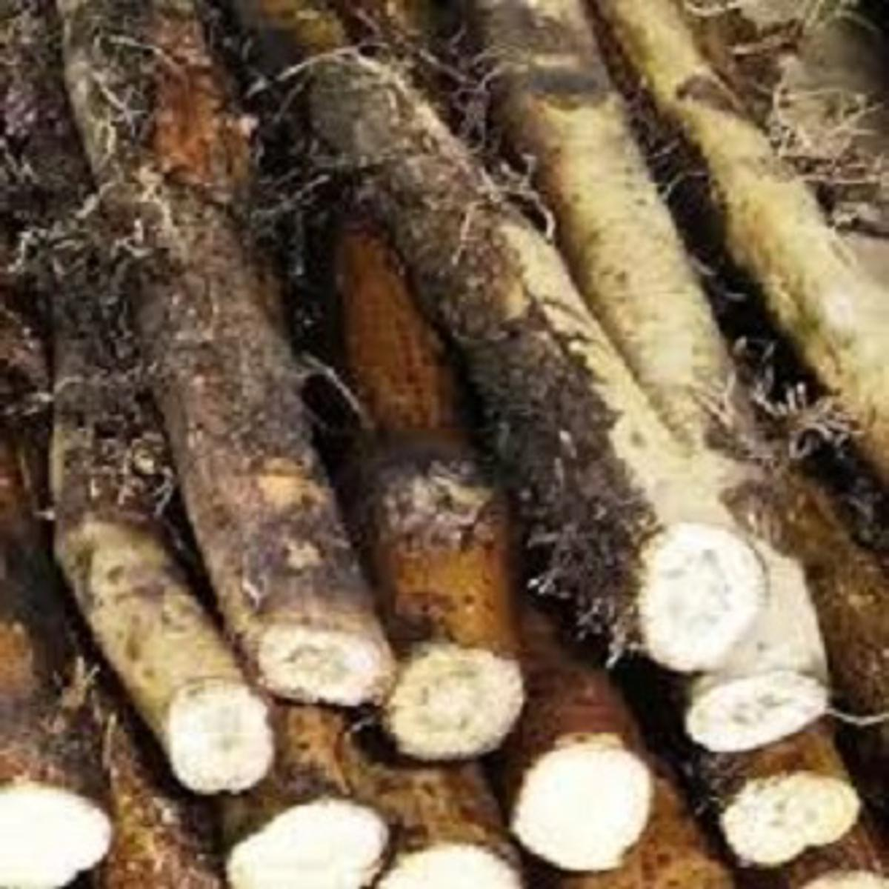

চুই ঝাল কেন খাবেন ও খেলে কি উপকার হয়?

- ✅ চুই ঝালে রয়েছে অনেক অনেক ঔষধি গুণ
- ✅ গ্যাস্ট্রিক সমস্যার সমাধান করে ও কোষ্ঠকাঠিন্য দূর করে
- ✅ খাবারের রুচি বাড়াতে এবং ক্ষুধামন্দা দূর করতে কার্যকর ভূমিকা রাখে
- ✅ পাকস্থলী ও অন্ত্রের প্রদাহ সারাতে চুইঝাল অনেক উপকারী
- ✅ স্নায়ুবিক উত্তেজনা ও মানসিক অস্থিরতা প্রশমন করে
- ✅ ঘুমের ওষুধ হিসেবে কাজ করে এবং শারীরিক দুর্বলতা কাটাতে এবং শরীরের ব্যথা সারায়
- ✅ কাশি, কফ, হাঁপানি, শ্বাসকষ্ট, ডায়রিয়া ও রক্তস্বল্পতা দূর করে
- ✅ সদ্য প্রসূতি মায়েদের শরীরের ব্যথা দ্রুত কমাতে ম্যাজিকের মতো সাহায্য করে
- ✅ এক ইঞ্চি পরিমাণ চুই লতার গুনাগুন অনেক অনেক বেশি
বাজারে অনেক চুই ঝাল দেখতে পাবেন এগুলি অনেক কম দামে পাওয়া যায়। কিন্তু সেগুলি হচ্ছে সুতা চুই ঝাল, অস্ট্রেলিয়ান চুই ঝাল, পাহাড়িচুই ঝাল, ইন্ডিয়ান চুই ঝাল ইত্যাদি।
কিন্তু আমাদের কাছে পাবেন অরিজিনাল খুলনার দেশি জাতের চুই ঝাল